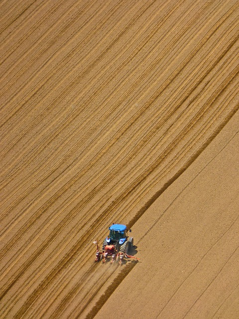
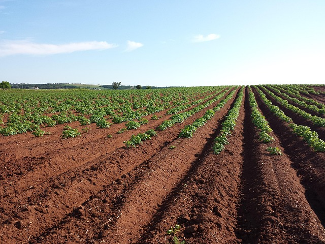
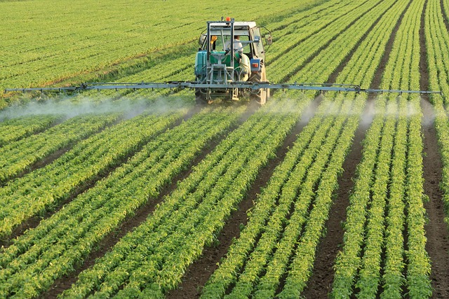
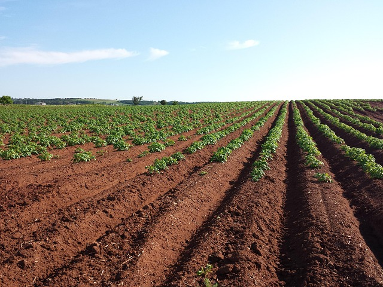
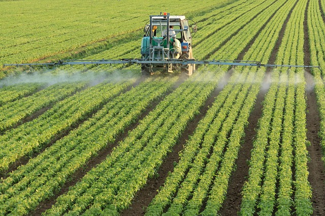
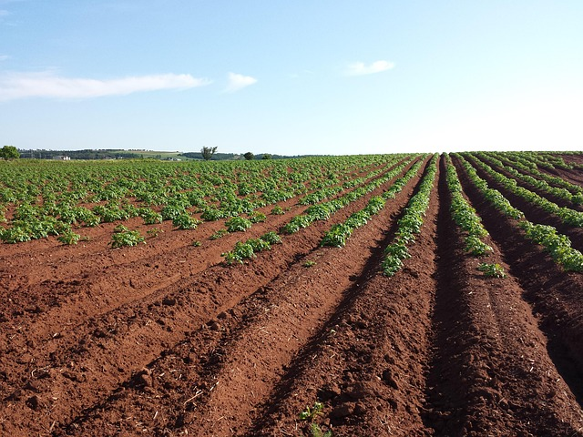
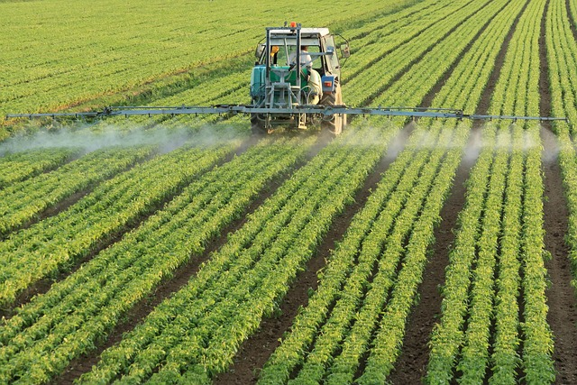

 





Farming Region One - Eastern Highlands
Soil characteristics
Region One covers the Eastern Highlands of Zimbabwe, including areas like Nyanga, Chimanimani, and Chipinge.This region is characterized by red soils. These are broadly classified as Acrisols and Ferralsols under the FAO soil classification system.
Here's a bit more detail about these soil types in Region 1:
Acrisols :
These soils are typically acidic and have a clay-rich subsoil (argillic horizon) that exhibits low base saturation. This means they have a limited capacity to retain nutrients. They are often well-drained and can be found on sloping land.Ferralsols:
These are deeply weathered, strongly leached, and often reddish or yellowish due to the accumulation of iron and aluminum oxides. They have low inherent fertility and a low cation exchange capacity, meaning they don't hold onto nutrients very well.Soil types in Region 1 of Zimbabwe: